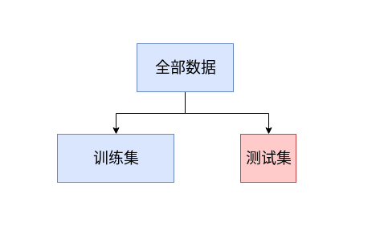
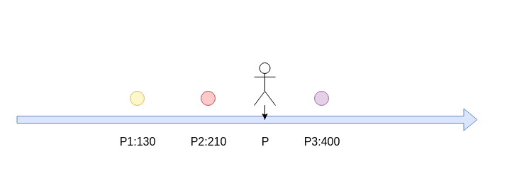
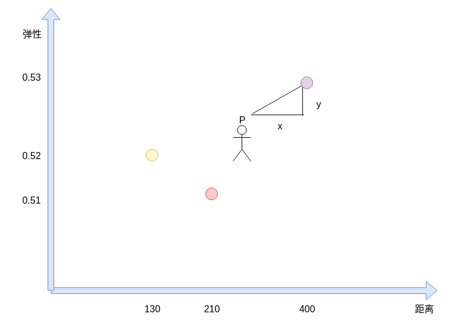
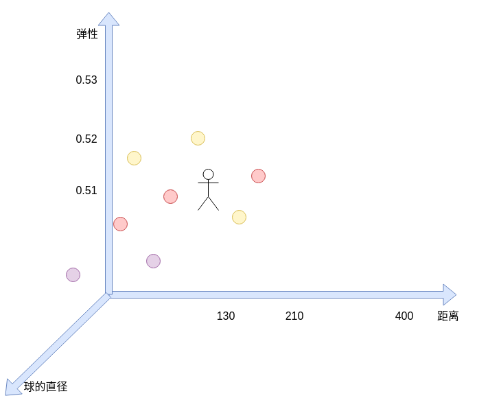
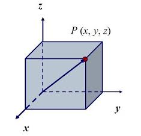
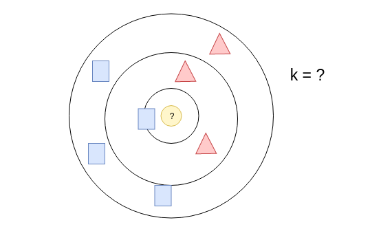

04-优化预测结果
为什么感觉预测结果不准确
超参： hyperparameter
k的值就是超参
| for i in range(3,200):
predict = knn(feature,label.astype(int),300,i)
print("k={}，预计落入{}号框".format(i,predict))
|
如何优化预期结果
- 修正超级参数
- 增加模型的复杂度，添加新的输入feature
- 修改预测的点
- 调整预测的模型（knn，svm，决策树，神经网络，深度神经网络)
- 数据集质量和数量不够，优化数据集，提高数据的质量和数量
- 接受糟糕的预测结果
如何判断参数是好的呢
如何评价模型的好坏？
如何评价一个学生的学习效果， 每日作业（训练），期末考试（测试）

| data = np.loadtxt('data3.csv',delimiter=',')
np.random.seed(8)
np.random.shuffle(data)
traindata = data[0:-120]
testdata = data[-120:]
|
用traindata的数据去做预测， 用testdata的数据来测试预测的准确性
| def testAccuray(k):
rightCount = 0
for item in testdata:
predict = knn(traindata[:,0:1],traindata[:,-1:].astype(int),item[0],k)
if predict == int(item[-1]):
rightCount +=1
print("k={},准确率={}".format(k,rightCount/len(testdata)))
|
| for k in range(3,100):
testAccuray(k)
|
由实验可得k=8的时候，准确率达到了30%
增加新的维度

第一个点的坐标 p_1 第二个点的坐标 p_2 ,两点的坐标的距离 \sqrt {（p_{1}-p_{2}）^{2}}

第一个点的坐标p_1 坐标(x_1,y_1) , 第二个点的坐标p_2 坐标(x_2,y_2)
两点的距离 \sqrt {\left( x_{1}-x_{2}\right) ^{2}+\left( y_{1}-y_{2}\right) ^{2}}


第一个点的坐标p_1 坐标(x_1,y_1,z_1) , 第二个点的坐标p_2 坐标(x_2,y_2,z_2), 两点的距离 \sqrt {\left( x_{1}-x_{2}\right) ^{2}+\left( y_{1}-y_{2}\right) ^{2}+\left( z_{1}-z_{2}\right) ^{2}}
第一个点的坐标 （a_1,a_2,a_3,...,a_n) , 第二个点的坐标(b_1,b_2,b_3,...,b_n),两点之间的距离
\sqrt {\left( a_{1}-b_{1}\right) ^{2}+\left( a_{2}-b_{2}\right) ^{2}+\left( a_{3}-b_{3}\right) ^{2}+...+\left( a_{n}-b_{n}\right) ^{2}}
引入弹性因素重新实现KNN
1
2
3
4
5
6
7
8
9
10
11
12
13
14
15
16
17
18
19
20
21
22
23
24
25
26
27
28
29
30
31
32
33
34
35
36
37
38
39
40 | import numpy as np
data = np.loadtxt('data3.csv',delimiter=',')
np.random.seed(8)
np.random.shuffle(data)
feature = data[:,0:2]
label = data[:,-1:]
#训练集
trainX = feature[0:-120]
trainY = label[0:-120]
#测试集
testX = feature[-120:]
testY = label[-120:]
def knn(feature,label,predictPoint,k):
distancedata = np.sqrt(np.sum(np.square(feature - predictPoint),axis=1))
#绝对值 np.abs(feature-predictPoint)
#垂直方向对数据进行排序
np.argsort(distancedata,axis=0)
##二维的要降低到1维度
index = np.argsort(distancedata,axis=0).reshape(1,-1)[0]
info = label[index].astype(int)
return np.argmax(np.bincount(info[0:k].reshape(1,-1)[0]))
def testAccuray(k):
rightCount = 0
for index,item in enumerate(testX):
predict = knn(trainX,trainY.astype(int),item,k)
if predict == int(testY[index]):
rightCount +=1
print("k={},准确率={}".format(k,rightCount/len(testdata)))
for k in range(3,100):
testAccuray(k)
|
Feature特点
马云有100000000元钱，你有1块钱
马云身高1米6，你身高1米8
数字的单位不同，带来距离的影响需要调整
数据归一化
X_{n}=\dfrac {x-x_{\min }}{x_{\max }-x_{\min }}
[200,150,650,430]
X_\max = 650 , X_\min = 150
[0.1, 0, 1, 0.56]
| def minmax(input):
return (input- np.min(input.T,axis=1)) /(np.max(input.T,axis=1)-np.min(input.T,axis=1))
|
数据标准化
数据均匀分布用归一化比较合适，数据如果是非均匀的离散分布，一定要用标准化。
X_{n}=\dfrac {x-x_{平均值}}{x_{标准差}}
X_{n}=\dfrac {x-np.mean(x)}{np.std(x)}
| def standration(input):
return (input- np.mean(input.T,axis=1)) /(np.std(input.T,axis=1))
|
完整代码
1
2
3
4
5
6
7
8
9
10
11
12
13
14
15
16
17
18
19
20
21
22
23
24
25
26
27
28
29
30
31
32
33
34
35
36
37
38
39
40
41
42
43
44
45
46
47
48
49
50 | import numpy as np
def minmax(input):
return (input- np.min(input.T,axis=1)) /(np.max(input.T,axis=1)-np.min(input.T,axis=1))
def standration(input):
return (input- np.mean(input.T,axis=1)) /(np.std(input.T,axis=1))
np.set_printoptions(suppress=True)
data = np.loadtxt('data3.csv',delimiter=',')
np.random.seed(8)
np.random.shuffle(data)
feature = standration(data[:,0:1])
label = data[:,-1:]
#训练集
trainX = feature[0:-120]
trainY = label[0:-120]
#测试集
testX = feature[-120:]
testY = label[-120:]
def knn(feature,label,predictPoint,k):
distancedata = np.sqrt(np.sum(np.square(feature - predictPoint),axis=1))
#绝对值 np.abs(feature-predictPoint)
#垂直方向对数据进行排序
np.argsort(distancedata,axis=0)
##二维的要降低到1维度
index = np.argsort(distancedata,axis=0).reshape(1,-1)[0]
info = label[index].astype(int)
return np.argmax(np.bincount(info[0:k].reshape(1,-1)[0]))
def testAccuray(k):
rightCount = 0
for index,item in enumerate(testX):
predict = knn(trainX,trainY.astype(int),item,k)
if predict == int(testY[index]):
rightCount +=1
print("k={},准确率={}".format(k,rightCount/len(testdata)))
for k in range(3,100):
testAccuray(k)
|
K值的选取
k值的选取跟数据集的大小和离散程度有密切的关系，
经验表明，如果数据量足够大， k的值为数据集大小开平方是比较理想的k值。

k过小，干扰太明显
k过大，会包含无关的因子
具体情况，具体分析